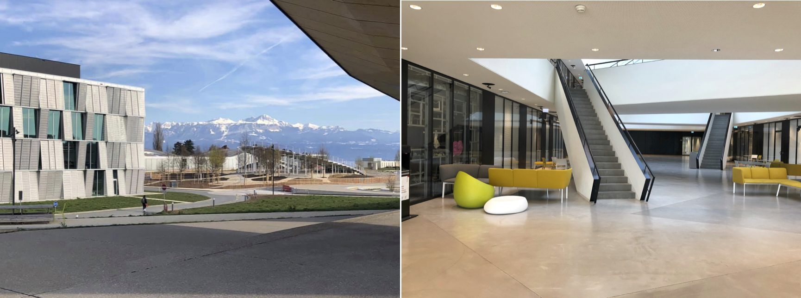
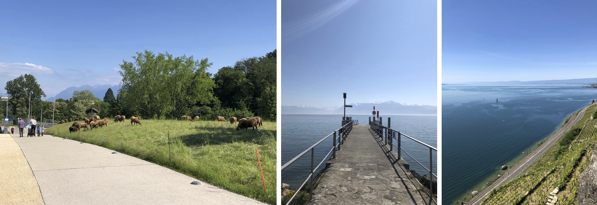
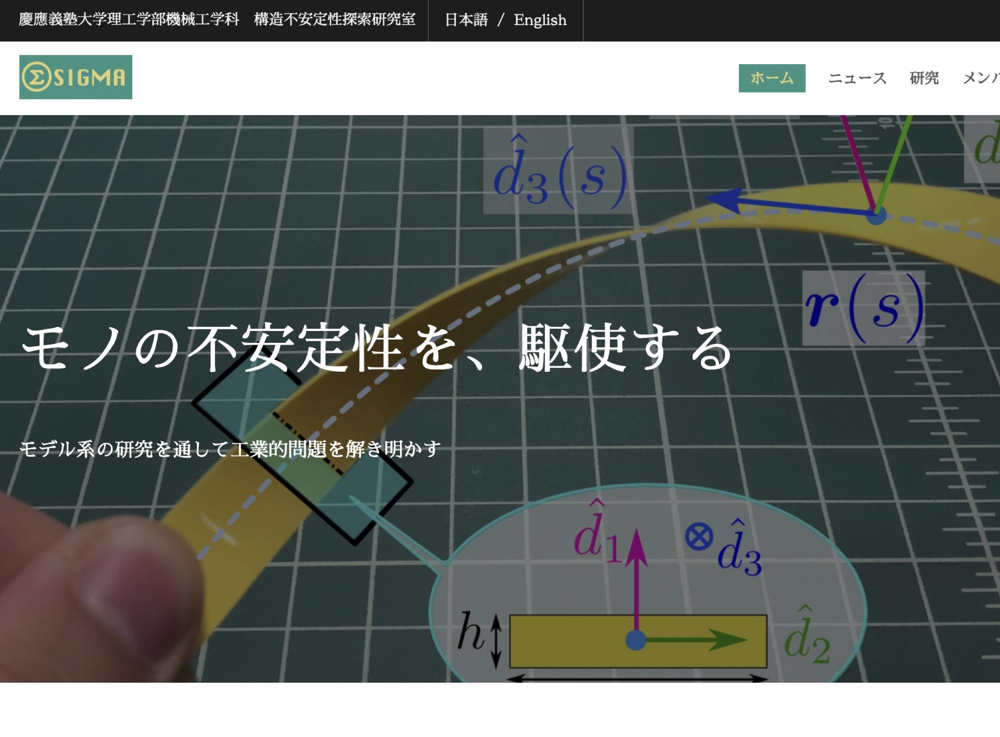
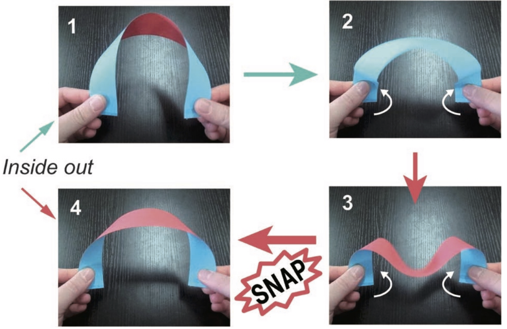
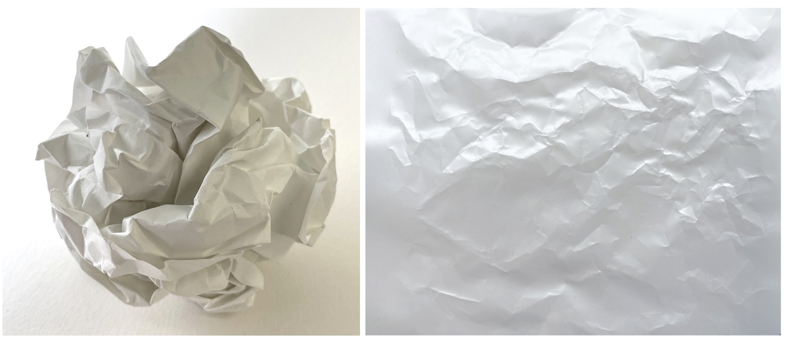
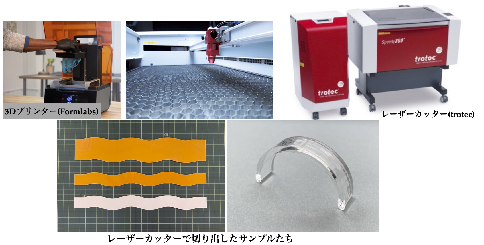
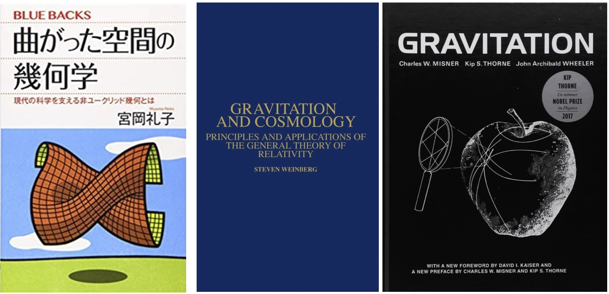

20: A theoretical physicist's toybox
Starring


Show notes
目次
02:39 コロナ禍での海外ポスドク生活
- 2年間スイスEPFLでポスドクをしていたが、半分はリモートになった。
- 全世界 ポスドク年俸 How much? - ぶひんブログ

図1: (左) キャンパスから望むスイスアルプス。ローザンヌはレマン湖に面したフランス語圏の街。左側のメタリックな建物の１階に研究室があった。正面の波打った建物はロレックスセンターとよばれ、図書館が中にある。
(右) 研究室がある建物内部。オサレ。左手に見えるのが私がいた研究室。隣に寿司屋があってよくいじられた。

図2: (左)キャンパス周辺には時々、草を適切な長さに保つために羊が放たれていた。牧歌的。
(中) キャンパスから10-15分程度歩くと湖まで行ける。湖の向こうにある街はミネラルウォーターで有名なEvian
(右) 電車で10分程度行くとワイン畑に行ける。とても良い散歩コース。スイスワインはとても美味しいけど、国内で消費され尽くすため国外ではあまり見かけない。
図3: 山の景色が雄大！
- 欧州内でも国境間の移動が大変だった。
- スイス-ドイツ間をよく移動していた。
- 飛行機で搭乗拒否された話。
13:28 どんな研究をしているのか(ざっくり)
ロープ、植物のつる、パスタ、リボン、ピンポン球、卵の殻などは薄い構造と総称され、これらは「しなやかに」変形する特徴があります。私は、座屈不安定性のように、構造と材料がもつ対称性が破れる過程を研究しています。さらに、その不安定性を「機能の発現」とみなす考えのもとで、新たな工業デザインの発見に取り組んでいます。モノの不安定性を駆使した研究をしています。

図4: 薄いモノの変形の研究をしています。2021年4月に研究室を立ち上げました。
動画1: 薄いモノとは
22:28 古そうで最近熱い力学
- 海底の通信ケーブルを設置するには？
Coiling of elastic rods on rigid substrates, Jawed et al., PNAS (2014). オープンアクセスなので実験の様子は論文中の図を参照してください。 - 薄いモノの構造不安定性
動画2: 構造物の大変形って聞くとなんだか不安になりません？建物壊れちゃう…
29:22 逆に不安定性を活用するというパラダイムシフト
- 例1. スナップ座屈 Twist-Induced Snapping in a Bent Elastic Rod and Ribbon, by Sano & Wada PRL (2019).

図5: ねじりによるスナップ座屈。Sano and Wada, PRL (2019). より。
動画3: スナップ座屈のデモ。
- 例2. ゴルフボールの流体力学を応用する
Smart Morphable Surfaces for Aerodynamic Drag Control, by Terwagne, Brojan, & Reis (2014).- ゴルフボールの変形を引き起こす実験設定。ヒントは人のシワにある。
リンク先のアブストラクトで実験の様子が見れます。
- ゴルフボールの変形を引き起こす実験設定。ヒントは人のシワにある。
動画4: ゴルフボールのモデル
- 例3. メカニカルメタマテリアル
負のポアソン比！？ Negative Poisson’s Ratio Behavior Induced by an Elastic Instability Flexible mechanical metamaterials- 局所的な変形をプログラムしておくことで自然には起こり得ない力学特性を示す材料を作成することができる。ソフトロボティクスなどに役に立つ。
動画5: メカニカルメタマテリアル。
動画6: Buckliball.
- 孫２人 遊びでの科学 （その１ buckliball） : 聚 糧
Buckliball は buckling + ball から来ているのと、フラーレン(C60)球をBucky ballと呼ぶことから２重の意味があるそうです。
47:42 普遍的じゃなさそうにみえる薄いモノって例えば何？
- 例1. くしゃくしゃに丸めた紙
A state variable for crumpled thin sheets

図6: くしゃくしゃに丸めた紙。広げてみると折り目とそうでない部分が混在しているのがわかる。折り目は塑性変形しているが、そうでない部分は依然としてフックの法則が成り立っているのは注目に値する。
- 例2. 結び目の力学 (直角締め 、三葉結び目 )
Mechanics of two filaments in tight orthogonal contact
The shapes of physical trefoil knots
結び目の力学の研究。私がスイスEPFL時代に関わった研究より。接触部分や曲率が大きい部分は材質の非線形性が支配的だが、そこから離れると依然としてフックの法則が成り立つためスケール普遍性がある。
動画7: 直角締め。
59:29 なんで「今」熱いの？
- レオンハルト・オイラー - Wikipedia
- 理由1. シミュレーション技術の発展。ディズニー映画にも使われている。 Artistic Simulation of Curly Hair by Pixar Animation Studios
動画8: ディズニー映画、メリダとおそろしの森より。髪の動きのアニメーションは弾性体の運動方程式を解いている。力学に忠実が故にリアルな動きをする。
動画9: 弾性体のシミュレーションについて。
- 理由2. ファブリケーション技術の向上。薄いモノが精密に設計できるので理論を実験検証できる。(レーザーカッター、3Dプリンターとか)

図8: 材料の整形技術の発展により、薄いモノを精密に設計可能。
動画10: らせんゴムの作り方。
1:11:06 物理学者にとって身近な分野と信じてやまない
動画11: 30代男性のおもちゃ箱。
- 曲面の幾何学って物理学者がみんな通る道(のはず)

図9: 物理学科といえば、量子力学や一般相対性理論。一般相対性理論といえば非ユークリッド幾何学。薄いモノの力学には曲線や曲面の幾何学がとても重要。
- 「パスタは半分に折れないのはなぜか？」
(イグノーベル賞2006年, ヨビノリたくみさんのツイート)- ねじれば半分に折れる
パスタを折ろうとすると３つ以上に折れてしまう。曲げたパスタが真っ直ぐになろうとする瞬間をハイスピードカメラで捉え、その仕組みが明らかになった。
- ねじれば半分に折れる
- 「卵を割るときに、横からぶつけると割りやすいのはなぜか？」 (幾何学的剛性) 曲面の剛性はそのガウス曲率に深く関係している。卵を割るときに側面をぶつけるのは、そのガウス曲率が小さく脆いためである。
- 「ピザを食べるときに曲げてもつのはなぜか？」 (ガウスの驚異の定理、ではなくピザの定理!?) 平たい紙をまっすぐもつのは難しいが、ちょっと曲げると水平にしゃんとなる。ピザを食べる時には曲面の幾何学的剛性を利用している。
動画12: 卵とピザとメジャーの幾何学的剛性。
1:30:11 地産地消の研究(自分で理論を作って、自分で実験)できるよ
- しなやかな磁気機能性材料の理論について
If you are attending The SES Virtual Conference (SocEngScience), check out the video of my talk about a reduced theory for hard magnetic rods under 3D deformation. We derived a Kirchhoff-like theory and validate it through experiments. @flexlab_epfl https://t.co/WpYt7RPTvf? pic.twitter.com/uQaunL91iD
— Tomohiko Sano (@TomoSano_en) September 30, 2020
図10: 磁場に応答する材料の理論を作って実験で検証
- 次元縮約 → 仮想仕事の原理 → 微分方程式の導出 → 離散シミュレーション → 実験で検証
1:36:55 おたよりコーナー


1:41:48 おすすめコンテンツなど
- Hidden Wonders The Subtle Dialogue Between Physics and Elegance
- Elasticity and Geometry: From hair curls to the non-linear response of shells
- 連続体の力学
図11: 今回話した内容に関連した文献
(左)この分野の第一人者たちが集まって書いたフランス語の本。最近英訳が出て話題になった。薄いモノといえばこの人たちという著者達。写真がとても綺麗。
(中) パスタ論文の著者の１人が著者に名を連ねている。現代的な薄いモノの力学の教科書でとても読みやすい。
(右) 連続体の力学のおすすめの教科書。普通の連続体力学の教科書は流体方程式やストークス流体から入るが、この本は板や棒の曲げから始めるので固体力学に興味がある初学者にはとてもおすすめ。

図12: 世界で一番美しい図鑑シリーズ。タイトルが言うように顕微鏡で撮影した写真達が本当に綺麗。学生の研究テーマのインスピレーションを得るのに最近たまに眺めている。
日本物理学会誌12月号に「しなやかさとともに、かたちあり-弾性と幾何」という記事を執筆しました！近年魅力的な最先端分野として現代に甦った力学分野の中でも、棒や板のような薄くて細いものを記述する枠組みの非専門家向けの解説記事です。https://t.co/BVdFNt8dQd pic.twitter.com/NEysE4hzfN
— Tomohiko Sano (@Tomo_1121) December 6, 2019
図13: 薄いモノに特化した日本語の教科書は残念ながら多くはありません。私が書いたレビューですが、もしよろしければ読んでください。(さのさん)
1:51:13 こぼれ話
- イタリアでジョジョ立ちした話
- 京大時代に自由を謳歌していた話
2:04:11 お知らせ
- 日本語の教科書がないので、詳しくはいえませんがなんらかの本を執筆中です。
- Young Soft Webinarという若手研究者を対象としたイベントを開催します。
第一回は6/29(火)10:30より開催いたします。
講演者は「磁化したしなやかな弾性体の縮約理論とその実験的検証」佐野友彦(慶應大)、「大腸菌コロニーの三次元的成長におけるトポロジカル欠陥と極性秩序」嶋屋拓朗(東大)です。奮ってご参加ください！— YoungSoftWebinar (@YSoftWebinar) June 2, 2021
- 出演して頂ける方や感想などをお待ちしております。
おたよりコーナーを作りました。質問、感想、要望などお待ちしております。https://t.co/rz0mlRKZU3
— Interaxion Podcast (@interaxion) January 12, 2021